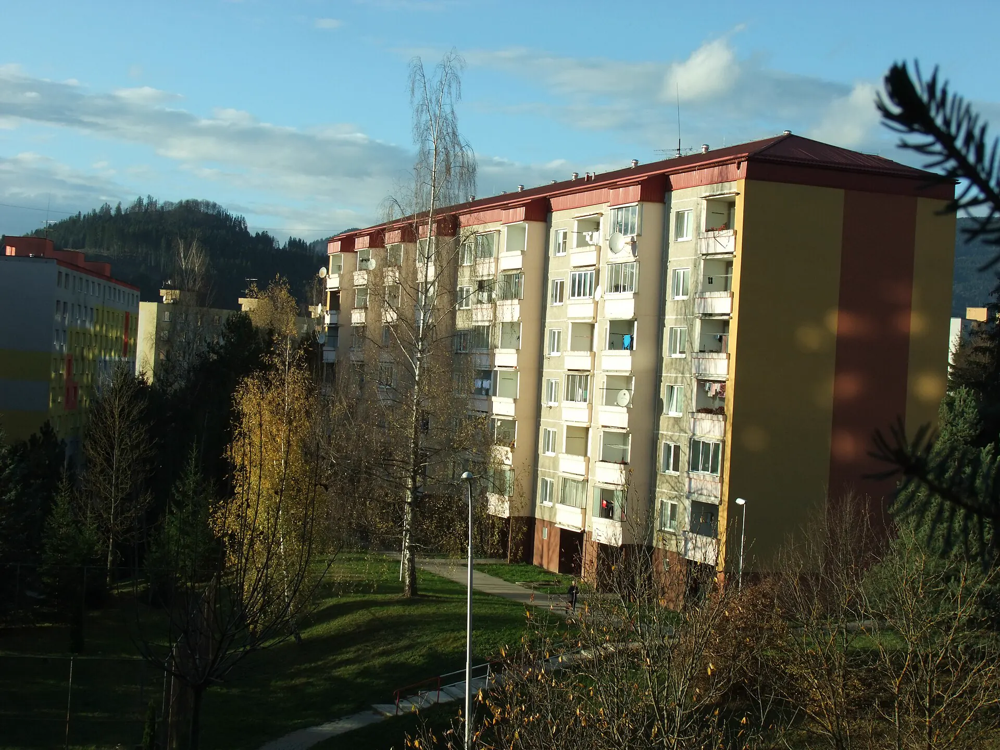
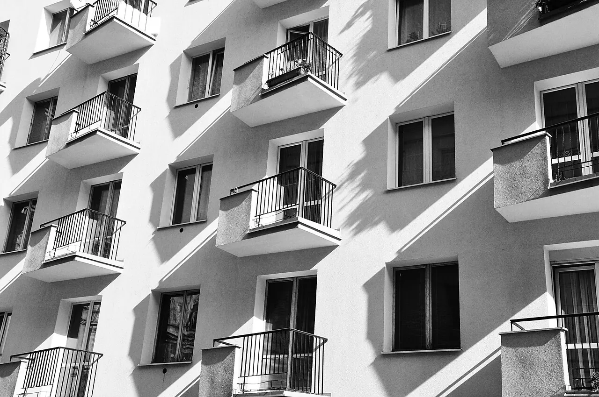
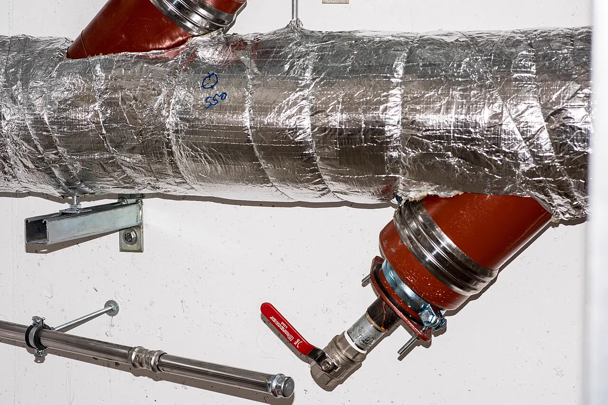
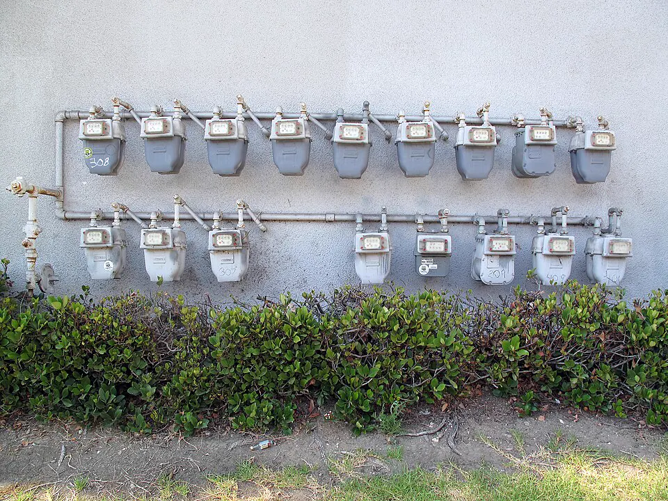
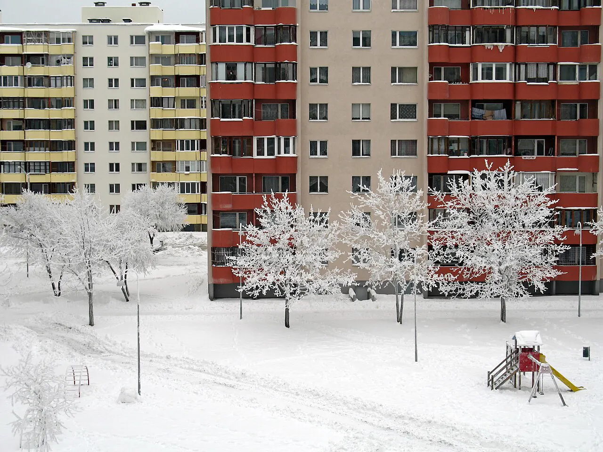

3 grudnia, 8:00–14:00: brak zimnej wody w Przylesie 4
Spółdzielnia mieszkaniowa dla 412 mieszkań
Sześć budynków na osiedlach Słoneczne Wzgórze i Przylesie. Awarie wody, gazu i windy przyjmuje pogotowie, całą dobę.

Biuro spółdzielni i kontakt
Biuro, ul. Przykładowa 1
Godziny pracy
- Poniedziałek
- 10:00–18:00
- Wtorek–piątek
- 7:30–15:30
- Sobota, niedziela
- nieczynne
- Pogotowie awaryjne+48 000 000 999, całą dobę
- ŚwiętaBiuro nieczynne 24 i 31 grudnia

Ogłoszenia na grudzień
Przerwy w dostawie, przeglądy i zmiany godzin biura. Te same kartki wiszą na klatkach schodowych.
- Brak zimnej wody w Przylesie 43 grudnia
Przerwa w dostawie zimnej wody w całym budynku od 8:00 do 14:00.
- Przeglądy instalacji gazowej7–18 grudnia
Roczne przeglądy we wszystkich budynkach. Dzień i godzinę dla swojej klatki znajdziesz w harmonogramie przy wejściu.
- Biuro nieczynne24 i 31 grudnia
W te dni biuro nie przyjmuje interesantów. Pogotowie awaryjne odbiera telefony jak zwykle.



Dokumenty spółdzielni
Udostępniane zgodnie z art. 8¹ ust. 3 ustawy o spółdzielniach mieszkaniowych.
7 dokumentów
 Statut SpółdzielniPobierz PDF
Statut SpółdzielniPobierz PDF- Regulamin porządku domowegoPobierz PDF
- Regulamin rozliczania kosztów zużycia wodyPobierz PDF
- Uchwała Zarządu nr 14/2026 w sprawie wymiany wodomierzyPobierz PDF
- Protokół z Walnego ZgromadzeniaPobierz PDF
- Protokół lustracji za lata 2023–2025Pobierz PDF
- Sprawozdanie finansowe za 2025 rokPobierz PDF
Nie ma dokumentu o takiej nazwie. Biuro pomoże go znaleźć: +48 000 000 001
Osiedla
Spółdzielnia zarządza dwoma osiedlami, Słonecznym Wzgórzem i Przylesiem. To sześć budynków i 412 mieszkań, jedno biuro i jedno pogotowie awaryjne, czynne całą dobę.